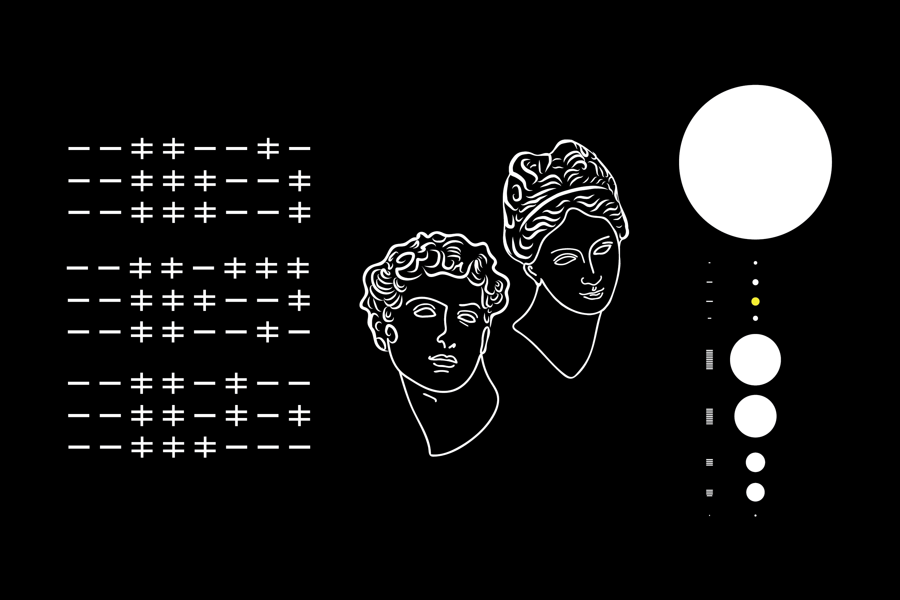

Project 1
A Visual Message for the Inhabitants of Other Celestial Bodies, 6 x 9, black & white
When I first thought about the prospect of communicating with inhabitants beyond our planet, I began by identifying symbols that could potentially be understood universally. I deduced that stars, perhaps simple geomtric shape, and numbers would be most likely recognized by others beyond our kind. Of course, numbers themselves are not universal, but the concept of counting, scale, proportion, and so on, is. I also believe that as we obviously cannot communicate a common language, visual imagery would be helpful.
I decided to visually represent our solar system, vertically up and down, indicating that Earth is our location with the color yellow. On the left of these circular shapes, I included dash marks that represent the size of the other planets relative to the Earth. In the middle of my design, I have depicted the male and female face in outline, inspired by Hellenistic busts which are known to be naturalistic. The final aspect of the design is a code; the code draws parallels to binary, comparing two different parts. Encoded is the value of the speed of light, a universal physical constant.
I aim to communicate three most basic ideas to inhabitants of other celestial bodies in my design: where we are, how far we are, and what we look like.